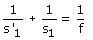
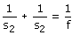
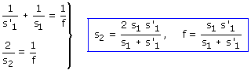
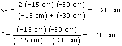

|
Primer caso La imagen real se forma por delante del espejo: -15 cm Datos: s1 = -30 cm, s'1 = -15 cm Incógnita: f  Segundo caso El objeto y su imagen están en la misma posición: s2 Incógnitas s2, f  Combinando las expresiones anteriores resulta un sistema de incógnitas f, s2   Si la distancia focal del espejo es -10 cm, el radio será -20 cm, es decir: el ojeto está en el centro. Colocando el objeto en el centro se obtiene una imagen en el mismo sitio, del mismo tamaño e invertida Construcción gráfica |